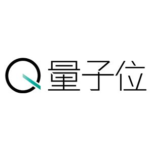
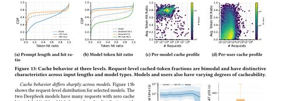
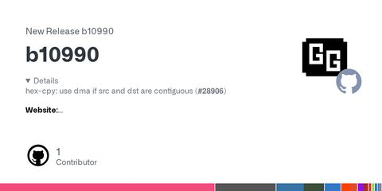
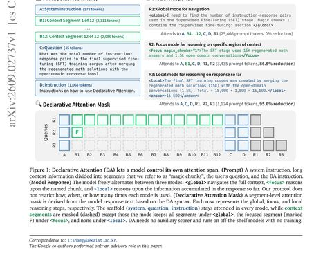
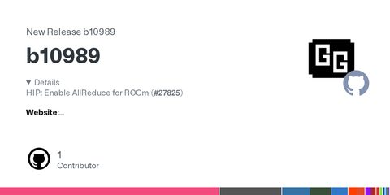

← 首页
AI 推理资讯
多模态大模型推理服务 · 每 2 小时一期简报 ＋ 中文深读笔记
📅 2026 年归档
2026-09-16
简报
09-16 17:00
多模态推理简报 · 9月16日 10:00
简报
09-16 15:08
多模态推理简报 · 9月16日 08:00
简报
09-16 12:57
多模态推理简报 · 9月16日 06:00
简报
09-16 10:59
多模态推理简报 · 9月16日 04:00
简报

09-16 07:00
多模态推理简报 · 9月16日 00:00
2026-09-15
简报
09-16 05:07
多模态推理简报 · 9月15日 22:00
2026-09-16
深读

09-16 05:04
深读 · 61 亿请求、一年生产 trace：前缀缓存到底怎么玩
- 论文：*A Year in LLM Serving: Workload Evolution, Caching and Load-Balancing*（Nixon 等，arXiv
2026-09-15
简报
09-16 03:13
多模态推理简报 · 9月15日 20:00
2026-09-16
深读
09-16 03:12
深读 · H200 单卡 vLLM 实战：3.69 倍效率分，KV 缓存是第一性原理
> 原文：3.69× the Baseline Score on a Single H200: Our AI Race 2026 LLM Inference Solution
2026-09-15
简报

09-16 01:00
多模态推理简报 · 9月15日 18:00
深读

09-15 23:03
深读 · Declarative Attention：让模型自己"申报"要看哪里，KV 读取砍掉三到五成
> 原文：Language Models Can Control Their Own Attention（arXiv:2609.02737）
简报

09-15 23:02
多模态推理简报 · 9月15日 16:00
← 上一页
·
第 10 / 16 页
·
下一页 →